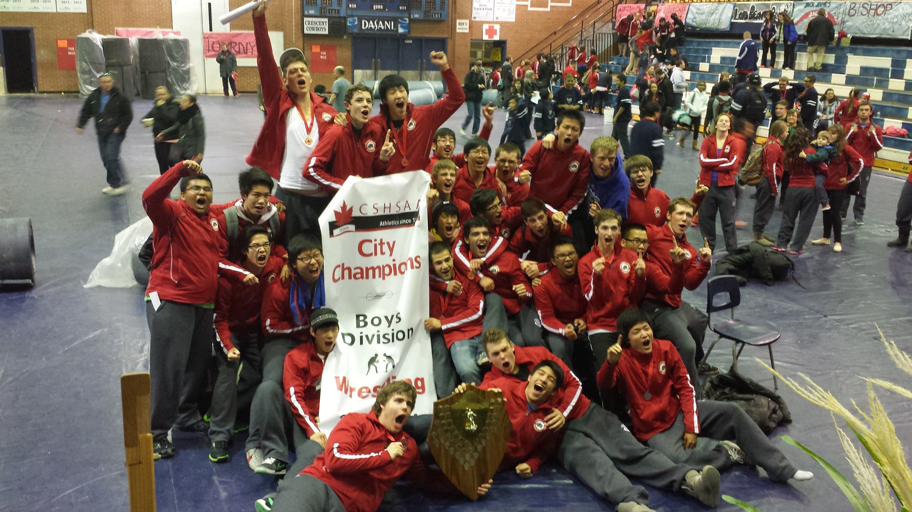
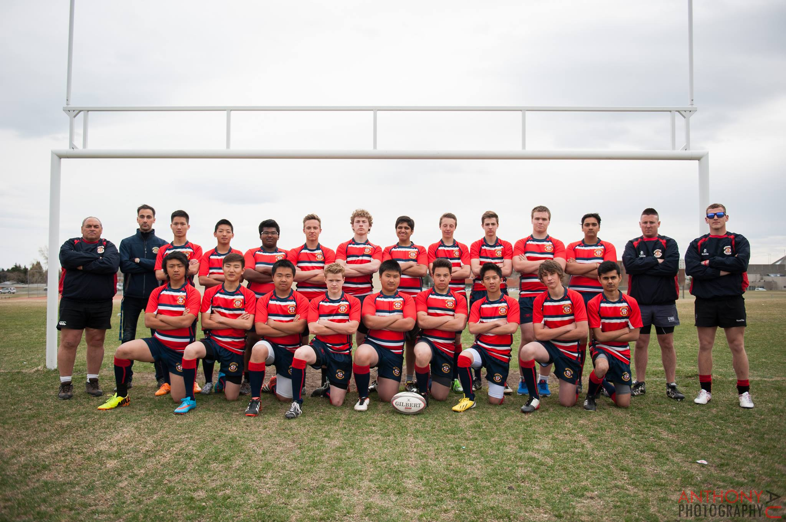

Early Life
I came to Canada when I was 12 years old. I started at the 7th grade at Tom Baines Jr High school. Afterwards, I went to Sir Winston Churchill High school to graduate and earn my diploma. During school I played football, rugby and wrestled. Outside my athletics I volunteered at my local church, community center and assisted with school events.
In high school I wrestled at the city championships placed 5th and moved forward to wrestle in the Alberta provincial championships. 
I was a part of the SWC school football team. I played as a first string offensive right tackle my junior year and senior year. This was an educational experience and I discovered my love for football.

The Season was from April to May. I played as a first string tight head prop. I traveled to Lethbridge with my team for two days to play a tournament held there. We had a 4-2 game season and entered division one finals.
Starting to Code
I started programming with Alice. It was a drag and drop programming language. Due this nature of the language I got the opportunity to see a visual representation of my code behaviour as I coded. With the help of Alice I animated short videos and made a small game.
As a programmer it is important to break the problem down and solve piece by piece. Designing functions that are small and yet effective at getting the job done is a very important tool to have when I am writing large amount of code. This is also the best method to ensure that avoided buggy code.
Continuing my studies in Programming
Afterwards, I learned Java, html, css, c/c++. The projects I have bulid with these languages can be viewed on the Projects page. I also studied verilog and assembly in my second year of computer engineering. However, I still prefer software engineering over hardware engineering. Over the next two years of my degree, I will be specializing in software and computer networking.